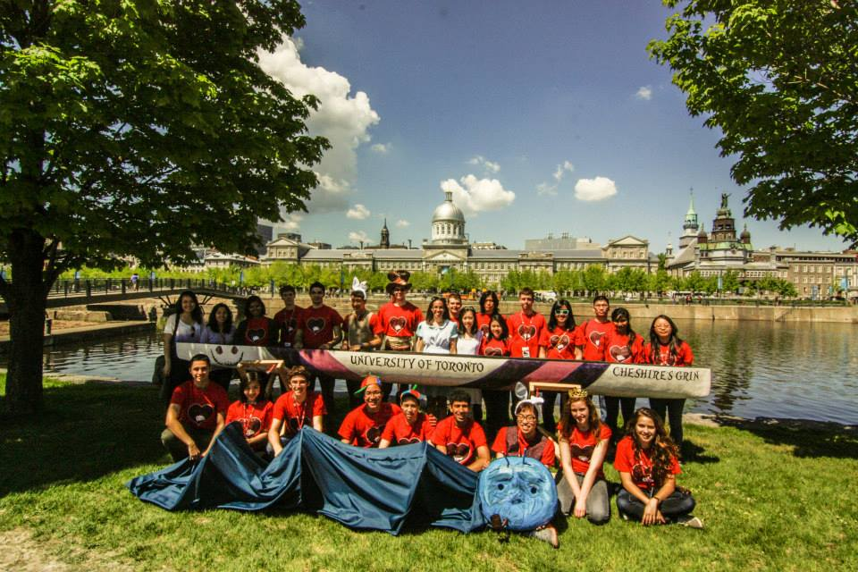

University of Toronto Concrete Canoe
Home
About
Canoes
Sponsors
News
Contact
☰
✕
Home
About
Canoes
Sponsors
News
Contact
2012 - 2013 // Cheshire's Grin
Theme: Alice in Wonderland
Cheshire's Grin // 2012 - 2013

Canoe Stats
Place at CNCCC:
3rd
Canoe Length:
5.75m (18.9 ft)
Canoe Weight:
91.5 lbs / 41.5 kg
Status:
In storage - UTPrint
Other Awards:
Best Design Paper, Lightest Canoe, 3rd in Final Product, 3rd in Oral Presentation
Project Managers
•
Evan Ma [CIV1T3+PEY]
•
Matthew Innocente [CIV1T3+PEY]
Team Members
•
Cole Wheeler [INDY1T3+PEY]
•
Minh Nguyen [CIV1T3]
•
Jason Yee [CIV1T3]
•
Tneshia Pages [Architectural Design1T3]
•
Anthony Blandon [CIV1T3]
•
Nigel Fung [CIV1T4+PEY]
•
Lina Yu [Nursing1T3]
•
Sitara Chiu [CIV1T4]
•
Cathy Zhu [NSCI1T3+PEY]
•
Sirui Zhu [CIV1T3+PEY]
•
Marko Spudic [CIV1T3+PEY]
•
Xin Chen [CIV1T3+PEY]
•
Gordon Tang [INDY1T4+PEY]
•
Qazah Shehzad [MECH1T4]
•
Monica Lee [CIV1T4]
•
Gabriel Wolofsky [CIV1T6]
•
Muhannad Hammad [INDY1T4+PEY]
•
Anita Tran [MECH1T6T1]
•
Cory Sulpizi [CIV1T6]
•
Allan Shek [CIV1T4+PEY]
•
Ashna Habib [CIV1T4]
•
Laura Mourao [CIV (Exchange)]
•
Rejuana Alam [INDY1T6]
•
Leo Chen [CIV1T6]
•
Stephanie Nyikos [MSE1T6T1]
•
Jessica Xie [ECE1T3+PEY]
•
Michael Ferri [NSCI1T0+PEY]
•
Alex Szot [CIV1T3+PEY]
•
Teresa Nguyen [CIV1T4]
•
Bo Wen Wen [CIV1T4+PEY]
•
Danielle Ripsman [INDY1T5]
•
Daniel Powell
•
Yung-Hsiang Chih
•
Ertiana Rrokaj [ARTSCI]
← Back to All Canoes